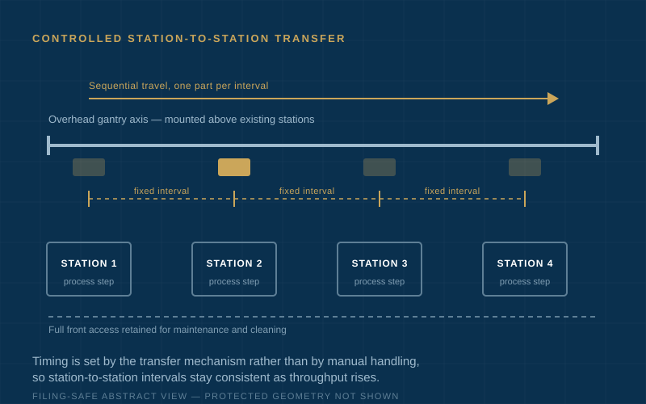
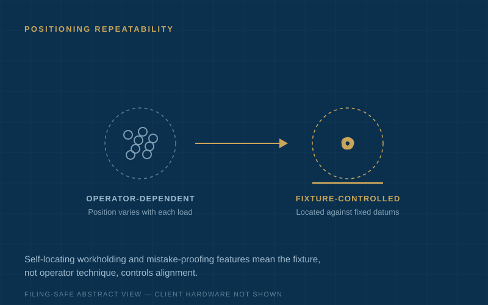

Selected Projects
Industrial Engineering Case Studies
Real examples of machine architecture, automation, fixtures, inspection systems, and production equipment — organized around the problem, constraints, engineering approach, solution, and result. Client names and proprietary details are withheld where required.
Machine Architecture
49 Motors → 4
Same Required Functions, Far Simpler Architecture
A machine concept as first drafted required 49 motors — expensive to build, wire, program, and keep running.
The problem: The original architecture assigned an actuator to every motion. Cost and complexity made the machine unbuildable within budget, and every added motor was a future failure point.
Constraints: The machine still had to perform every required motion, meet cycle time, and remain safe and accessible for operators.
Approach: Rethought the mechanical architecture: shared drives, cam and linkage mechanisms, and mechanical synchronization replaced individually actuated axes wherever a motion did not truly need independent control.
Solution: A revised architecture supported by concept layouts, 3D CAD, and drawing documentation.
Result: The same required machine functions were achieved with 4 motors instead of 49, substantially simplifying the mechanical and controls architecture.

Production Equipment
Gantry Transfer System for Sequential Processing
A process required parts to move through a sequence of stations with controlled timing — beyond what manual transfer could sustain.
The problem: Manual transfer between stations limited throughput and introduced timing variation that affected process quality.
Constraints: The system had to fit above existing stations, allow full operator access for maintenance and cleaning, and use standard purchasable motion components.
Approach: Developed the mechanical architecture for an overhead gantry transfer system, selecting motion components for serviceability and designing end-effectors around the actual part geometry.
Solution: An overhead gantry architecture supported by equipment layouts, 3D CAD, drawing documentation, and advisory coordination during the client-managed build.
Result: Consistent station-to-station timing, improved throughput, and an architecture designed for the client’s technicians to maintain.

Inspection and Test Systems
Optical Inspection Positioning System
A manufacturer needed parts presented to an optical inspection station with consistent position and orientation — a step that had always been done by hand.
The problem: Manual staging varied by operator, producing inconsistent measurements and an inspection bottleneck that queued parts ahead of shipment.
Constraints: Existing optics and camera hardware had to stay. Floor space was fixed. Operators with no special training had to load and unload quickly.
Approach: Designed a positioning system that locates each part against repeatable datums, with loading motions built around operator reach and cycle time rather than added automation complexity.
Solution: A datum-based positioning system supported by concept layouts, 3D CAD, drawings, and a fabrication-review package.
Result: Repeatable part presentation, reduced handling time, and inspection staging that no longer depended on individual operator technique.

Fixtures and Workholding
Benchtop Production Station with Operator-Assist Fixturing
A hand-assembly step was slow, physically awkward, and produced results that varied from operator to operator.
The problem: The operation required holding, aligning, and joining components by hand. Manual effort was high and repeatability low.
Constraints: The station had to fit on an existing bench, need no plant utilities beyond standard power, and be usable within minutes of introduction.
Approach: Designed a benchtop station with self-locating workholding and poka-yoke features, sequencing the operator’s motions so the fixture — not technique — controls alignment.
Solution: A self-locating benchtop fixture supported by 3D CAD, fabrication drawings, and an operator-flow review.
Result: Reduced manual effort, more consistent results across operators, and a station adopted on the production floor.

Facing a similar engineering problem?
Send a short description of what is stuck, too manual, or too complex. EngineeringXYZ will identify whether there is a practical first step.
Discuss a Project